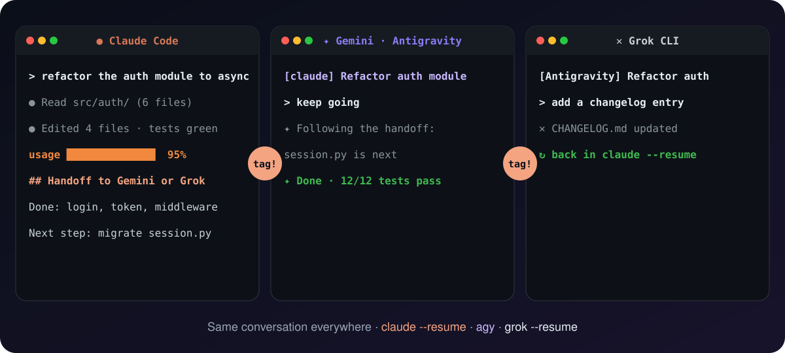

One conversation across Claude Code, Gemini and Grok CLI.
When a 5-hour usage limit hits mid-refactor, switch tools without starting over. TagTeam mirrors your real native sessions both ways and writes a five-line handoff note before stopping.
- Claude Code
- Gemini · Antigravity & agy CLI
- Grok CLI

Install in three commands
Requires Windows 10/11, Python 3.11+ and Claude Code. The installer sets up hooks, mirrors your environment, and installs the official agy and grok CLIs if missing.
git clone https://github.com/mop4r/tagteam "$HOME\.claude\skills\tagteam" python -I "$HOME\.claude\skills\tagteam\scripts\instalar.py" agy grok
Sign in once to agy and grok, then keep working as usual. Every session shows up natively in claude --resume, the Antigravity sidebar, the Agy CLI --resume picker, and Grok --resume.
- Three-way native sync Claude JSONL, Antigravity SQLite + protobuf (desktop app and CLI), and Grok ACP JSONL stay in sync through hooks.
- Automatic 95% limit handoff Before stopping, the agent writes Request, Done, In progress, Next step, and Watch out so the next AI picks up cleanly.
-
Same rules, skills and MCP servers
Gemini and Grok reference your
~/.claude/CLAUDE.md, skills, plugins, and MCP servers without duplicating files. - Conflict-safe and 100% local Continued sessions are never overwritten, mirrors never bounce back, and nothing leaves your machine.
What stays in sync
| From Claude Code | Gemini (Antigravity / agy) | Grok CLI |
|---|---|---|
| Conversations | Both ways (desktop app + CLI) | Both ways |
~/.claude/CLAUDE.md |
Referenced from generated ~/.gemini/GEMINI.md |
Loaded natively + ~/.grok/AGENTS.md |
Skills (~/.claude/skills) |
config/skills.json |
Native |
| Plugins & MCP servers | config/plugins.json & mcp_config.json |
Enabled in config.toml |
| Automatic handoff at 95% | Yes (via local quota API) | Manual (Grok CLI has no non-TUI usage API yet) |
| Interactive resume picker | Agy CLI --resume shortcut |
Grok --resume shortcut |
The five-line handoff
At 95% of the Claude 5-hour or 7-day limit (or Gemini quota), the Stop hook pauses once so the agent leaves a short handoff note at the end of the chat:
## Handoff to Gemini or Grok - Request: migrate the auth module to async. - Done: login, token and middleware migrated; 34 tests green (commit 3f2a91c). - In progress: session.py half done, branch feat/async-auth. - Next step: finish SessionStore.refresh() and run tests/auth. - Watch out: don't touch the legacy /v1 routes; credentials are in .env.local.
Frequently asked questions
How does TagTeam continue a Claude Code conversation in Gemini Antigravity or Grok CLI?
Hooks in Claude Code, Antigravity and Grok CLI call TagTeam after replies (throttled to once every 2 minutes per conversation). TagTeam converts and writes directly to each agent's native session storage so resume works inside each tool.
Does it send my code or chats to a remote server?
No. Everything is local file I/O plus Antigravity's local language server. No telemetry, no proxy, and no third-party API keys.
Can I sync across multiple Windows PCs?
Yes. Sync ~/.claude/projects with git, Syncthing, or OneDrive. TagTeam keeps sync state per PC and remaps workspace paths across different usernames and drives.
What about macOS and Linux?
The core sync engine is pure Python standard library; Windows shortcuts and the Grok picker are Windows-specific today. Pull requests for macOS and Linux are welcome on GitHub.